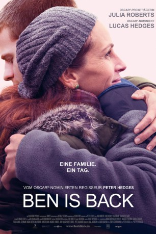
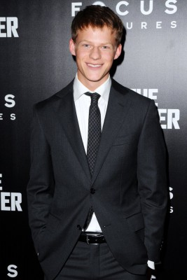
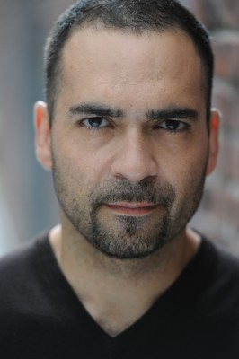

#11243 Ben Is Back
 
 IMDB-Wertung: 6.7 / 10
IMDB-Wertung: 6.7 / 10  Tomatometer: 82
Tomatometer: 82  Metascore: 66
Metascore: 66 
Holly Burns (Julia Roberts) weiß gar nicht, wie ihr geschieht: Wie aus dem Nichts steht plötzlich ihr ältester Sohn Ben (Lucas Hedges) vor der Tür, bereit, wieder in den Kreis der Familie aufgenommen zu werden. Doch die Stimmung droht schon bald zu kippen, denn auch wenn seine Mutter nur zu gerne glauben würde, dass Ben sein Drogenproblem hinter sich gelassen hat, bleibt ein gewisser Zweifel. Sein Stiefvater Neal (Courtney B. Vance) und seine Schwester Ivy (Kathryn Newton) sind von der Rückkehr nur wenig begeistert und befürchten, schon bald vor einem emotionalen Trümmerhaufen zu stehen – schon wieder. Doch Holly gibt ihren Sohn nicht auf und steht ihm in dieser besonders schweren Zeit bei, um die Familie zusammenzuhalten. Ben wird allerdings schnell von seiner Vergangenheit eingeholt, sodass sich seine Mutter fragen muss, ob sie ihren eigenen Sohn überhaupt kennt.
Jahr: 2018
Dauer: 103 Minuten
FSK: 12
Land: USA Studio: Roadside AttractionsTonspuren: DTS - ,
Untertitel: Deutsch,
Auflösung: 1080p (1920x808) Größe: 4812 MB
Genre: Drama
Regisseur: Peter Hedges
Drehbuch: Peter Hedges
Soundtrack: Dickon Hinchliffe
Darsteller:
 Julia Roberts als Holly Burns
Julia Roberts als Holly Burns-  Lucas Hedges als Ben Burns
 Courtney B. Vance als Neal Beeby
Courtney B. Vance als Neal Beeby Kathryn Newton als Ivy Burns
Kathryn Newton als Ivy Burns- Rachel Bay Jones als
- David Zaldivar als
- Alexandra Park als
 Michael Esper als
Michael Esper als  Tim Guinee als
Tim Guinee als - Kristin Griffith als
- Jack Davidson als
- Mia Fowler als
- Jakari Fraser als
- Cameron Roberts als
- Jeff Auer als
 Bill Buell als
Bill Buell als - Nathalie Carvalho als
- Emily Cass McDonnell als
- Jocelyn Bioh als
- Gamze Ceylan als
- Marquise Vilson als
- Bevan Thomas als
- Melissa van der Schyff als
- Rosalie Tenseth als
- Michael David Baldwin als
- Ian Stark als
- John Cashin als
-  Teddy Cañez als
 Rosemary Howard als
Rosemary Howard als  Faith Logan als
Faith Logan als - Eduardo Munniz als
 Robert Myers als
Robert Myers als - Sammy Peralta als
- Shaun Rey als
- Candace Smith als
- Rowan Olivia Tarmy als
- Jessica VanOss als
- Lilyana Weaver als
 Myra Lucretia Taylor als
Myra Lucretia Taylor als - Henry Stram als
- Sandra Caldwell als
- Michelle Hedges als
- Karen Willock als
 Leon Addison Brown als
Leon Addison Brown als - Crystal Bock als
- Anna Lee Warren als
- Avery Soto als
- Vincenzo James Harty als
- Olivia Etchings als
- Kameron S. Holder als
Datei: X:\2018(A-F)\Ben Is Back (2018, FSK12, 1920x808).mkv seit 29.05.2019
Festplatte: HD 2017(A-Z)-2018(A-F)
 Es gibt insgesamt 151 Filme in der Gruppe '2018(A-F)'
Es gibt insgesamt 151 Filme in der Gruppe '2018(A-F)'